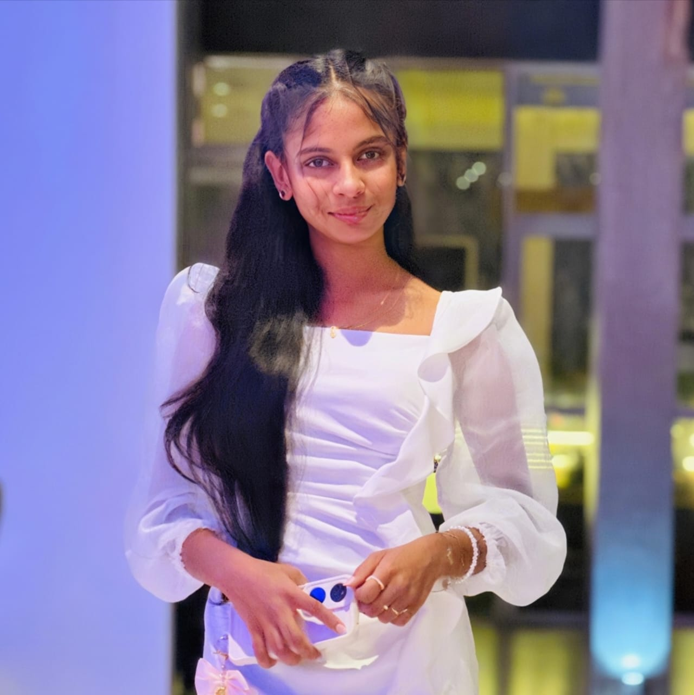
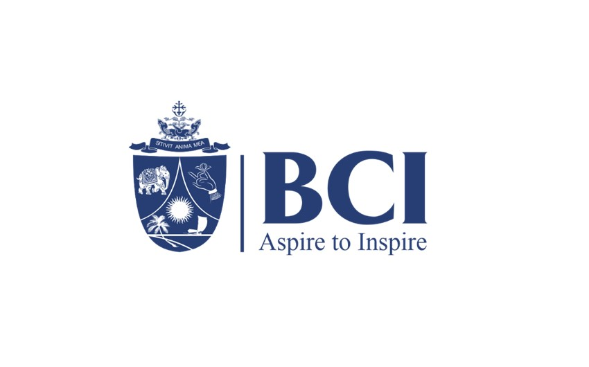
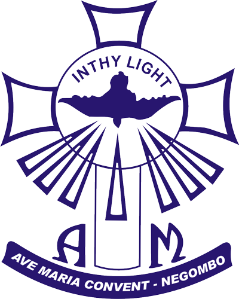
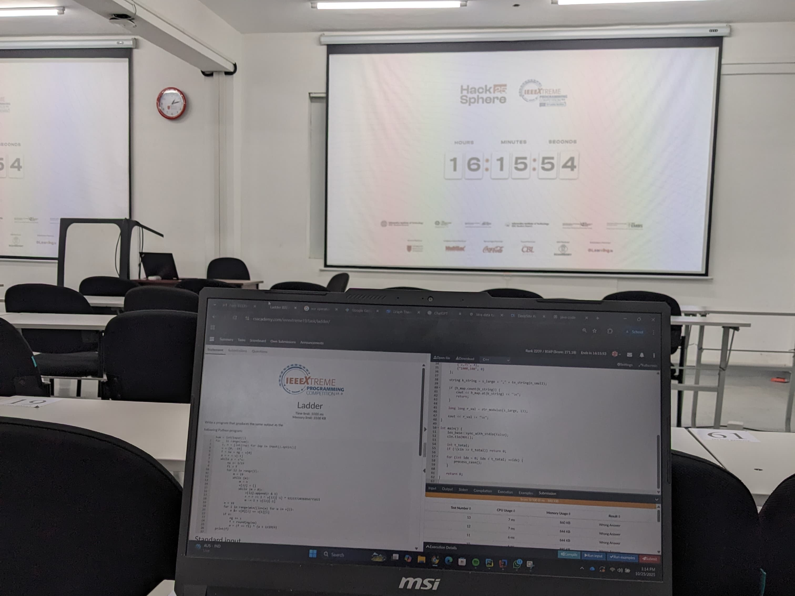

Hi, I'm
Emily Rajapakse
I am a BSc (Hons) student in Artificial Intelligence and Data Science at the Informatics Institute of Technology (IIT), UK. Passionate about using technology to solve real-world problems, I am building skills in Python, Java, SQL, and machine learning, and I thrive on collaborating and exploring innovative, data-driven solutions.

Emily Rajapakse
AI & DS Undergraduate at IIT
ML Engineering | AI Engineering | UI & UX | Data Analytics | User Interface Designing | Python Developing
A Bit About Me
I am currently pursuing a BSc (Hons) in Artificial Intelligence and Data Science at the Informatics Institute of Technology (IIT), affiliated with the University of Robert Gordon , UK.
My academic journey covers a wide range of areas including programming, data analysis, databases, and core AI concepts. I enjoy exploring how technology can solve real-world problems, and I am open to learning and working across different domains within AI, machine learning, and data-driven innovation.
Skills I am developing include:
• Programming in Python and Java
• SQL & Database Management
• Machine Learning Fundamentals
I am always looking for opportunities to collaborate, gain practical experience, and grow my technical and professional skills.
My Education Journey
Informatics Institute Of Technology | IIT
BSc(Hons) in Artificial Intelligence and Data Science
2024-Present

BCI Campus (Benedict XVI Catholic Institute)
Diploma in English and Literature
2024 March-2024 June

Ave Maria Convent Negombo
GCE Ordinary Level
2019-2020
Ave Maria Convent Negombo
GCE Advanced Level
2021-2023
Skills
Here are some of the key technical and soft skills I’ve developed throughout my academic journey and hands-on projects.
Programming languages
AI & Data Science
Machine Learning
Deep Learning
Data Analysis
Data Visualization
Pandas
NumPy
Scikit-learn
TensorFlow
Tools & Platforms
Git
GitHub
Jupyter Notebook
VS Code
Google Colab
Canva
Web Development
Databases
Soft skills
- Communication
- Teamwork & Collaboration
- Problem Solving
- Time Management
- Adaptability
- Active listening
- Maintaining professional relationships
- Patience
Featured Projects

Child Emotion Prediction System
Developed an AI-powered web application that analyzes children’s drawings to predict emotional states such as happiness, calmness, anxiety, or sadness. The system uses deep learning for image-based emotion classification and provides results through an interactive Streamlit dashboard for teachers.

Dementia Prediction System
Developed a machine learning web application to predict dementia risk using clinical and cognitive indicators. The system includes data preprocessing, model training with Random Forest, SHAP-based explainability, and a Streamlit interface for real-time predictions.

Customer Churn Prediction System
Built a machine learning model to predict telecom customer churn using a Decision Tree and Neural Network. Performed data preprocessing, feature engineering, and evaluated models using standard ML metrics.
Volunteering & Roles

IEEE RAS PR Lead- Term 26/27
Appointed as the Public Relations Lead of the IEEE Robotics and Automation Society at IIT (2026/27). Responsible for managing the society’s outreach, strengthening industry connections, and promoting events and initiatives.

RobotNexus 3- PR ViceChair
Served as the Vice Chair of Public Relations for RobotNexus 3, a robotics workshop series where students learned fundamentals such as line-following and wall-following robots. Responsible for promoting the event and supporting outreach activities.

TechTrek 3.0- PR ViceChair
Served as PR Vice Chair for TechTrek 3.0, an industry visit series where students explore top companies and gain insights into industry practices. Responsible for event promotion and communications.
Achievements

1st Place – Aftermath Competition, IEEE Student Branch
Secured 1st Place in the Aftermath Competition organized by the IEEE Student Branch, demonstrating strong teamwork, problem-solving, and strategic thinking.

IEEE Xtreme 25' Hackathon
Participated in IEEE Xtreme 25', a 24-hour global programming competition, strengthening problem-solving and coding skills under time constraints.

IX’25 , IEEE Student Branch
Participated in IX’25 organized by the IEEE Student Branch, collaborating in a team to design a high-fidelity UX prototype using Figma, focusing on future human computer interaction and adaptive interfaces.
Certificates

Web development 2 - Front end web development
University of Moratuwa

Introduction to cloud infrastructure
Microsoft

Data fundamentals
IBM SkillsBuild